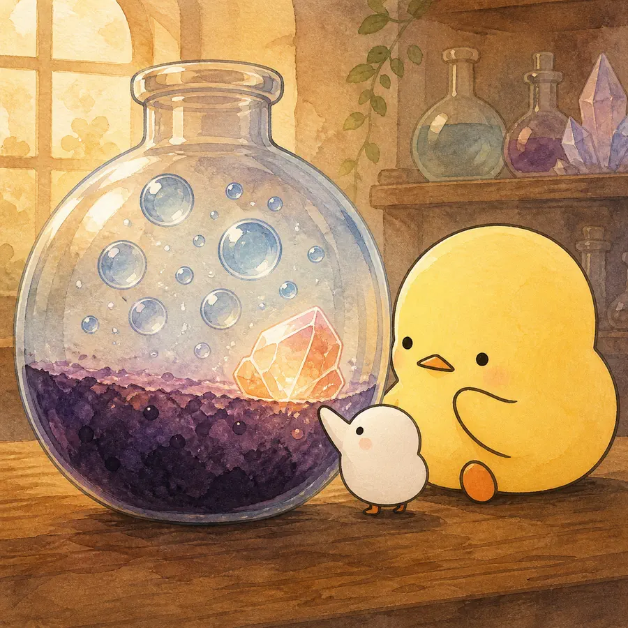
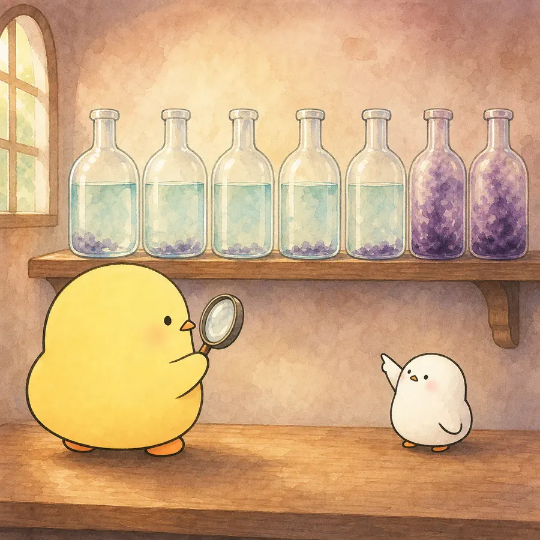
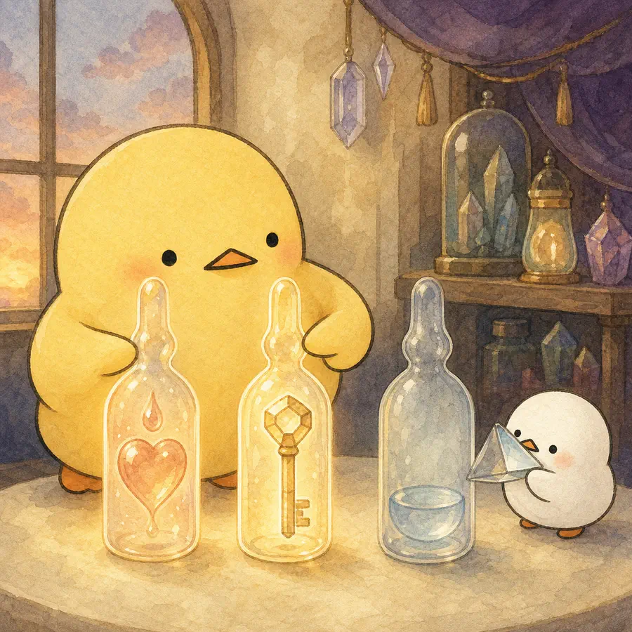
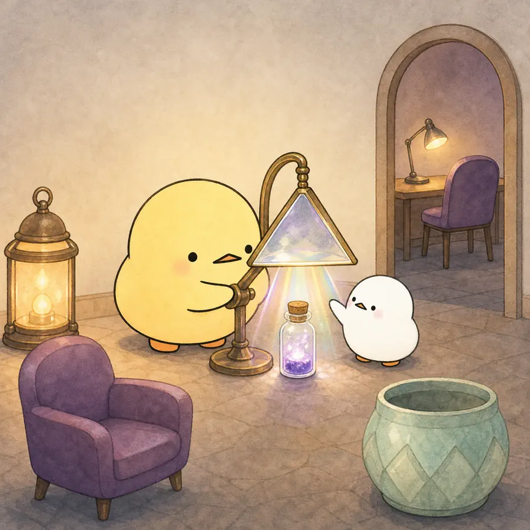

ILLUSTRATED OVERVIEW
Caregiving, Bereavement and Complicated Grief
돌봄 뒤 사별에는 지침과 슬픔뿐 아니라 안도와 준비도 한 용액처럼 섞일 수 있고, 그 조합은 사람마다 다르다.
옆으로 넘겨 4컷 보기
-

누적 스트레스, 돌봄 부담의 종료, 예상된 죽음에 대한 준비는 경쟁하는 설명이지만 한 사람 안에서도 함께 작동할 수 있다.
-

많은 돌봄제공자의 증상은 1년 안에 크게 줄지만, 상당한 소수는 높은 스트레스와 정신건강 어려움을 지속한다.
-

죽음을 오래 예상해도 정서적 수용, 현실적 계획, 생애말기 정보의 준비 정도는 서로 다를 수 있다.
-

죽음 전후에 부담·지원·의미·준비를 대화로 확인하고, 필요에 따라 호스피스·상담·치료·전문평가를 연결한다.